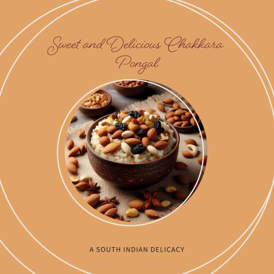

Andhra Chakkara Pongal

Sweet Pongal, also known as Chakkara Pongal, is a delightful and celebratory dish originating from Andhra Pradesh, India. It's a creamy rice and lentil pudding cooked with jaggery, ghee, nuts, and spices, bursting with rich flavors and textures. Perfect for festive occasions like Sankranti, it's also a comforting and satisfying dessert or breakfast option.
Ingredients
- 1/2 cup (100 gms) basmati rice
- 1/4 cup (60 gms) yellow moong dal, washed
- 1/2 cup (125 gms) jaggery, grated or powdered.
- 1/4 cup (60 ml) water
- 3 tbsp ghee
- 1/4 tsp cardamom powder
- 1/8 tsp nutmeg powder
- Pinch of saffron (optional)
- 1/4 cup cashews, chopped and roasted
- 1/4 cup raisins
- Few strands of curry leaves
Instructions
- Clean and rinse the rice and moong dal thoroughly.
- Heat ghee in a heavy-bottomed pan or pressure cooker. Once hot, add the curry leaves and let them crackle for a few seconds.
- Add the rinsed rice and moong dal, and roast them for 2-3 minutes until slightly golden brown. Stir continuously to prevent burning.
- Transfer the roasted rice and dal to the pressure cooker and add water. Cook for 3-4 whistles on medium heat. Alternatively, you can cook in a pan with water, covered, until the rice and dal are soft and mushy.
- While the rice and dal cook, prepare the jaggery syrup. In a small pan, combine jaggery and water. Heat over low heat until the jaggery dissolves completely. Strain the syrup to remove any impurities.
- Once the rice and dal are cooked, add the jaggery syrup, cardamom powder, and nutmeg powder (and saffron, if using). Stir well and cook for another 5-7 minutes, or until the mixture thickens and reaches desired consistency.
- Add the roasted cashews and raisins. Give it a final stir and turn off the heat.
- Serve hot, garnished with additional cashews and raisins, if desired.